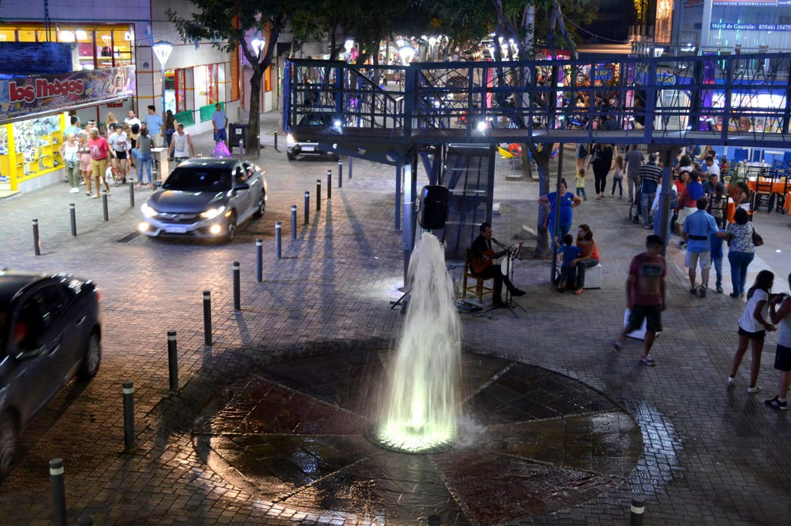
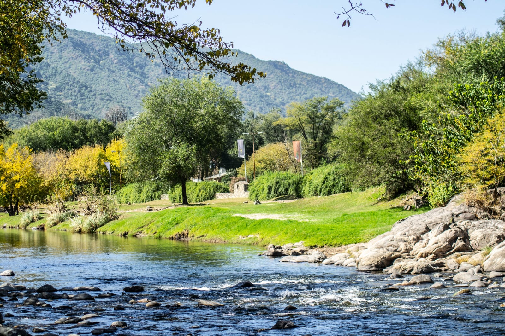
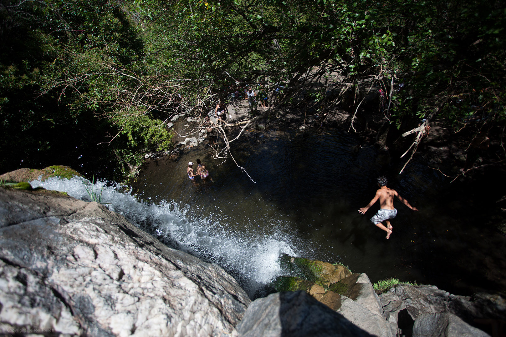
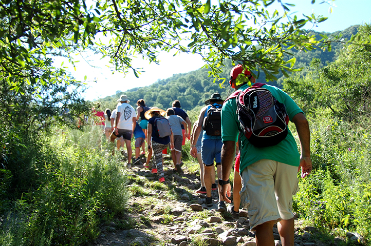
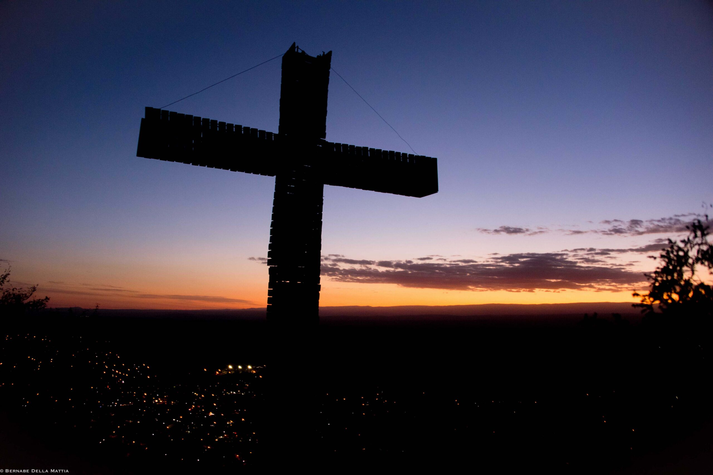

Santa Rosa de Calamuchita es una ciudad situada en el Departamento Calamuchita, en la provincia argentina de Córdoba, a 96 km de la capital provincial y a 24 km de la ciudad de Embalse, sobre la ruta provincial 5.
Está ubicada en el corazón mismo del Valle de Calamuchita, rodeada de sierras, y disfruta de un clima mediterráneo. El río Santa Rosa atraviesa la ciudad, desde el barrio Santa Mónica al noroeste, hasta el barrio Sexto Loteo al sur.


Reserva Natural La Cascada
El sendero recorre 1.700 metros de bosque autóctono atravesado por el arroyo Loyola proveniente de vertientes naturales. En el mismo se pueden apreciar árboles y plantas nativas como Talas, Molles, Espinillos, Chañares, Piquillines, Peperina y dentro de la fauna cabe destacar la presencia de aves como Mirlos, Semilleros, Carpinteros, Rey del Bosque además de mamíferos como, zorrinos, liebres y cuises.
Durante el recorrido cada 150 metros se encuentran ubicadas referencias numéricas.
Se inicia con el número 1 a 666 msnm y finaliza con el número 10 a 705 msnm.El visitante podrá optar desde la posta número 7 por dos alternativas: circuito alto y circuito bajo, ambos con su final en el salto de agua de unos 6 metros.

Duracion
Alrededor de 45 minutos desde el ingreso hasta la cascada, tener en cuenta que el sendero tiene horarios de ingreso y egreso, con un registro visitante.

Rio Santa Rosa
Santa Rosa de Calamuchita ofrece un combo imperdible para disfrutar en vacaciones o en una escapada. Atravesada por el río Santa Rosa, la clave será «desconectarse» en sus playitas y balnearios o entre caminatas por sus márgenes.
En las cercanías, se pueden hacer cabalgatas y sumarse a un día de campo con almuerzo serrano
Como Llegar
Cómo llegar: desde Córdoba, se puede llegar en colectivo con buses Lep o Sierras de Calamuchita. En auto, es posible tomar la RP45 y luego seguir por la RP5, hasta llegar a destino.
Cerro Via Crucis
El cordón de las Sierras Chicas, eterno centinela del Valle, es el lugar que todos desean alcanzar.
El sendero al Cerro Vía Crucis es uno de los más elegidos para abrazar el sueño de llegar a la cima.
Disfruta de un trekking de una hora y media, llegando a los 800 metros sobre el nivel del mar en menos de 300 metros de caminata.

De dificultad media, el sendero recorre 14 estaciones y al llegar a la cima conseguiremos una imponente vista panorámica de todo el Valle de Calamuchita.